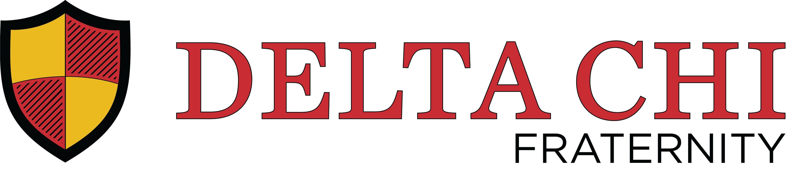
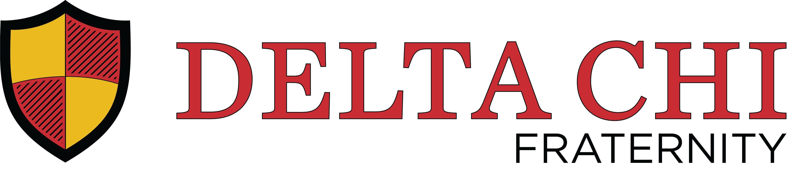

History of Delta Chi
Our brotherhood dates back to October 13, 1890, when eleven law students at Cornell University formed a law fraternity. In 1922, Delta Chi officially became a social fraternity, allowing men in all areas of study to join. In 1929, Delta Chi became the first fraternity to officially abolish hazing practices associated with “hell week.” Since our founding, Delta Chi has grown to over 120 chapters and colonies across the U.S. and Canada, initiating more than 107,000 brothers.